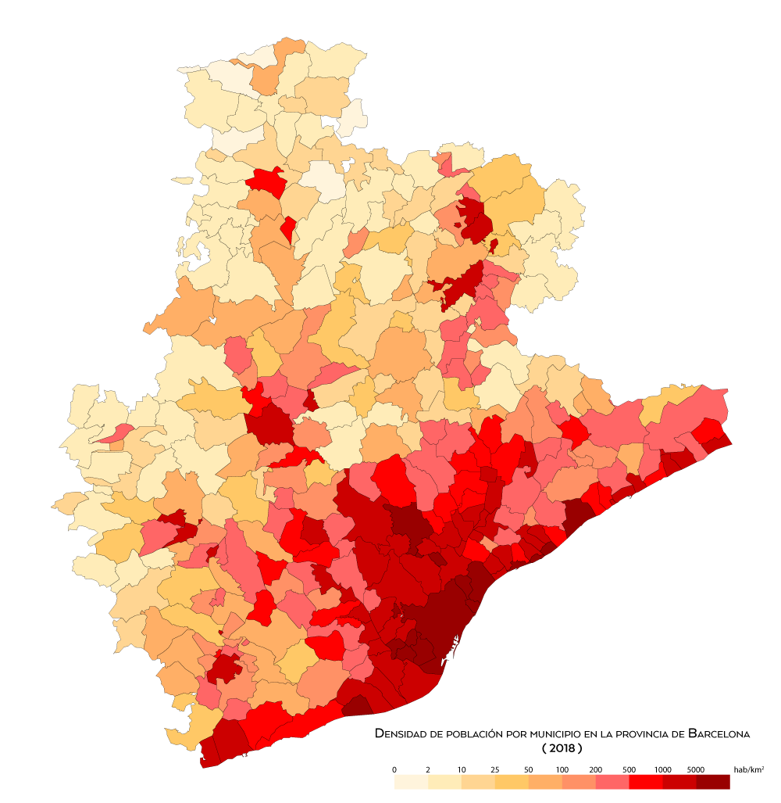

Ubicación 1
L'Eixample de Barcelona
Ubicación 2
Sagrada Familia
Ubicación 3
Playa de la Barceloneta
Ubicación 1
L'Eixample de Barcelona
L'Eixample es el nombre que recibe el distrito segundo de la ciudad de Barcelona, que ocupa la parte central de la ciudad, en una amplia zona de 7,46 km² que fue diseñada por Ildefons Cerdà. Es el distrito más poblado de Barcelona en términos absolutos (262 485 habitantes) y el segundo en términos relativos (35 586 hab./km²).
Leer más...
Ubicación 2
Sagrada Familia
La Sagrada Familia, es una basílica católica de Barcelona (España), diseñada por el arquitecto Antoni Gaudí. Iniciada en 1882, todavía está en construcción. Es la obra maestra de Gaudí y el máximo exponente de la arquitectura modernista catalana. Es uno de los monumentos más visitados de España, junto al Museo del Prado y la Alhambra de Granada, y es la iglesia más visitada de Europa tras la basílica de San Pedro del Vaticano. Cuando esté finalizada, será la iglesia cristiana más alta del mundo.
Leer más...
Ubicación 3
Playa de la Barceloneta
La playa de la Barceloneta es la más antigua y famosa de las playas de la ciudad de Barcelona (España). Fue remodelada justo antes de los Juegos Olímpicos de 1992. Se encuentra en el barrio de La Barceloneta (Ciutat Vella). Junto con la barcelonesa playa de San Sebastián y la playa de la Victoria, es una de las más largas con una longitud de 1100 metros.
Leer más...
Mapa de Barcelona
En el siguiente mapa podemos ver la ciudad de Barcelona:
Densidad de Barcelona
En la siguiente imagen podemos observar la poblacion de Barcelona:
